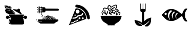

KOFFIE BRIGADE
Gerechten
First coffee heeft een mobiele espressobar voor ieder evenement, op elke lokatie. Een fraaie Piagio ape 50, een authenthieke bakfiets of een bar met espressomachine. Altijd bedient door één van onze barista's. ook maken wij verse filterkoffie met één van onze filtersystemen. en we hebben natuurlijk een assortiment biologische thee. Onze Kalahari biologische koffie is 100% CO2 vrij gebrande biologische UTZ koffie in FSC verpakking. Wil je een logo of tekst op de koffiebeker dan kunnen wij dat ook regelen. Naast koffie en thee maken wij ook heerlijke hot chocolate gemaakt van echte belgische chocolade van Veliche Gourmet in verschillende smaken. Verder maken wij lemonades van hoge kwaliteit met de siropen van Agroposta. In de zomer hebben we een iced coffee en cold brew assortiment. Je kunt ons boeken vanaf €75.- p/u voor bijvoorbeeld onbeperkt koffie en thee.
Chef's specials
- Alle espresso en espresso gebaseerde koffies zoals cappuccino en flat white.
- Biologische thee.
- Hot chocolate.
- Agroposta lemonade.
- Iced coffee en cold brew.
Details
- Max. capaciteit per uur: 200 servings
- Gem. prijs per persoon: € 2,50
- Bedieningsregio: Heel Nederland
- KvK nummer: 69100578
Onze crew
First coffee is een jong bedrijf met meer dan alleen de ambitie om de beste koffie te maken. We willen vooral mensen inspireren en verbinden. Onze barista’s zijn bevlogen, sympathiek en oprecht geïnteresseerd in hun gasten. Wie ze ook zijn, waar ze ook vandaan komen. Het First Coffee-team zorgt dat iedereen zich thuis voelt.
Beoordelingen
Meau
2 februari 2019
Heel lekker en gezellig!!
★ ★ ★ ★ ☆
Trea
10 mei 2019
Personeel was minder...
★ ★ ☆ ☆ ☆
Sam
12 juni 2019
Fantastische look and feel!
★ ★ ★ ★ ★
Emma
1 augustus 2019
Hele fijne indeling.
★ ★ ★ ★ ☆
Youp
20 oktober
Top gerechten en personeel was super!!
★ ★ ★ ★ ★